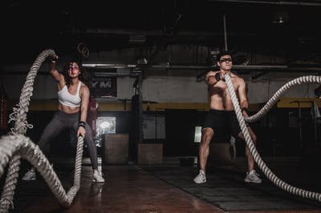

Fitness Heroes
Welcome to our homepage:

What we offer:
Cardio

Either you're looking to lose weight or simply staying healthy cardio is your key.
Why cardio is important:
By increasing your muscles' capillary as well mitochondrial density,
cardio workouts enhance your body's ability to fuel your muscles with more energy and achieve better workout performance.
Weight Training
If you're looking to build muscles we have the best equipment and coaches in the world.
such as Harley Pasternak
and Kayla Itsine

Strength training can help you manage or lose weight, and it can increase your metabolism to help you burn more calories.
Enhance your quality of life. Strength training may enhance your quality of life and improve your ability to do everyday activities.
Strength training can also protect your joints from injury.
You could also follow the video below for more informations or simply clicking on DETAILS
DETAILS